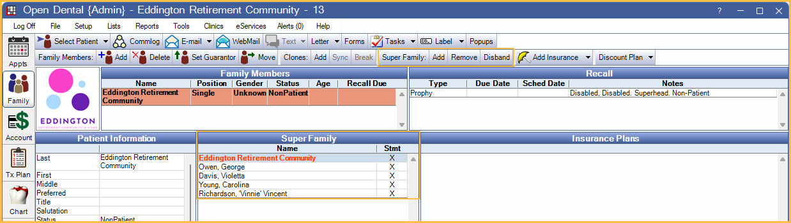

Super Family
In the Family Module, super families can be used to group patients that are related in some way.
Super Families can be useful for various reasons, for example:
- Patients in a particular care facility (e.g., nursing home or retirement community).
- A split family due to divorce.
- Members of an athletic team getting mouthguards.
The guarantor of the first family added to a Super Family is considered the super head. This family is listed first in the Family Module, Super Family grid in bold red.
Tips:
- To quickly switch between families or patients, click on a name.
- The sort order of families is determined by the Super family sorting strategy preference. Inactive patients automatically sort to the bottom.
- If a family's guarantor is included in super family billing, an X shows in the Stmt column.
- To add the name of the super head to the Patient Information area, add Super Head to Fields Showing in Display Fields, PatientInformation.
- To add additional fields to the Super Family grid, see Display Fields, SuperFamily Grid Columns.
Turn on Super Families
To use this feature, enable Super Families in Show Features.
Once enabled, the following is available:
- Family Module toolbar, Super Family buttons (Add, Remove, Disband).
- Edit Patient Information, Included in Super Family Billing checkbox.
- Statement Window, Send to Super Family checkbox.
- Billing, Group by Super Family checkbox.
Review and set default options in Preferences:
- Super family sorting strategy.
- Allow syncing patient information to all super family members.
- Copy the super guarantor's primary insurance to all new super family members.
- New patient clones use super family instead of regular family.
Create a Super Family
To create a super family, first add the super head, then add other families.
Create the Super Family:
- Select the patient (guarantor) who is the super head.
- In the Family Module toolbar, click Super Family: Add.
- When first clicked, all family members of the super head list in a new Super Family section (in bold red).
Add family members to the Super Family:
- Click Super Family: Add. The Select Patient window opens.
- Select the patient.
- If the Copy the super guarantor's primary insurance to all new super family members preference is enabled, a message shows.
- Click Yes to copy the super head's primary insurance plan to the each patient in the new family. For each copied plan the following occurs:
- The patient's Medicaid ID is used as the Subscriber ID. If there is no Medicaid ID entered, a prompt to enter the subscriber ID on the Insurance Plan displays.
- The default Relationship to Subscriber is set to Self.
- If the patient has no other insurance, the plan is added as the primary insurance (order = 1). If other plans are entered, the plan is given then next available order number (order = 2, 3, etc).
- Click No to add the family without copying insurance plans.
- Click Yes to copy the super head's primary insurance plan to the each patient in the new family. For each copied plan the following occurs:
- The patient is added to the super family.
Super Families in the Account Module
To see transactions for all families in a Super Family, in the Account Module, check Show SuperFamily below the Patients.

The Patients area is relabeled SuperFamily and all members of the Super Family are listed. The Super Family Head is at the top of the list in red. Other families are listed in black. All individual members within a family are listed below the family guarantor. The Patient Account grid displays all transactions for the selected family.
Super Family Statements / Invoices
Statements and invoices can be sent to each family guarantor, or create super statements or invoices that are addressed to the super head, include account activity for all patients in the super family, and are grouped by the family guarantor.
Create a single super statement:
- Select any patient in the Super Family.
- From the Account Module, click the Statement dropdown, More Options. See Statement Window.
- Check Send to Super Family.
- Select other options as needed.
- Click Print, Email or Save to generate.
Create a super statement using the billing list:
- In the Manage Module, click Billing. See Billing.
- Check the Group by Super Family box.
- Click Create List. Only the super head have a statement generated.
- Click Print, Email or Save to generate.
Create a super invoice:
- Select any patient in the Super Family.
- From the Account Module, click the Statement dropdown, Invoice. See Invoice.
- Select the procedures, payment plan charges due, and adjustments.
- Keep Send to Super Family checked. It is checked by default.
- Select other options as needed.
- Click Print, Email or Save to generate.
All patients included in a super statement or invoice have a statement entry added in their patient account grid.
Remove a Patient/Family
To remove a patient/family from a Super Family, click on their name, then click Remove. The screen switches to the removed guarantor's record. Any super statements generated for patients in the removed super family no longer shows in their patient account ledger.
Disband a Super Family
Disbanding a Super Family removes the relationship between all members of the Super Family. A confirmation message shows to verify the removal. Any super statements generated for disbanded family members no longer shows in their patient account ledger.
Turn off Super Families
If Super Families are turned off in Show Features, but patients are left in a super family, there is no way to disband them. Only turn off Super Families when all Super Families have been disbanded.